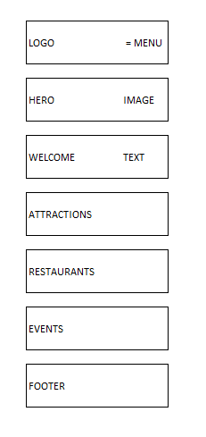
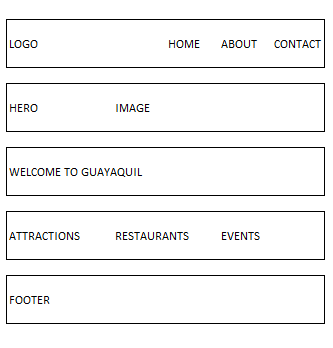

Site Name
Guayaquil Tourist Guide
The name clearly describes the website and lets visitors know it provides valuable travel and tourism information about Guayaquil, Ecuador.
Optional Domain: guayaquiltouristguide.com
Site Purpose
The website provides information about Guayaquil's main attractions, restaurants, parks, museums, local events, travel tips, and maps to help visitors plan their trip.
Scenarios
- What are the best places to visit in Guayaquil?
- Where can I find restaurants near Malecón 2000?
- What local events are happening during my visit?
Color Scheme
- #004b87 - Header, navigation, and headings.
- #00335c - Footer background.
- #0077b6 - Navigation hover, links, and section accents.
- #f5f5f5 - Page background.
- #222222 - Body text.
Typography
- Playfair Display - Used for the page title and section headings.
- Roboto - Used for paragraphs, navigation, lists, and footer text.
Wireframes
Mobile View

Desktop View
